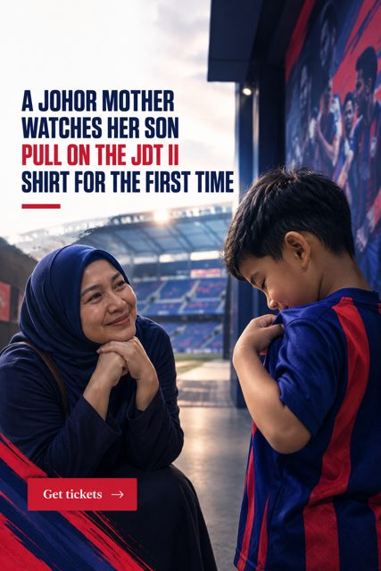

Next-gen Tigers · Updated 6 Nov 2026
How do young Johor players reach the JDT first team?
Young Johor players reach the JDT first team through the club's academy, which runs teams from Under-12 to Under-23, and then through the development sides JDT II to JDT V. Progress depends on performance at each level, and the academy holds AFC Two-Star accreditation.

Why this matters now
In August 2026 the New Straits Times reported that the JDT academy keeps producing title-winning age-group teams, and that the club sees the results of several years of investment in development. Academy director Javi Jorda made the point that public attention tends to fall on the senior team, while the real work happens in building foundations and developing the next generation. The same report described the academy as the only fully professional Malaysian club academy with teams from Under-12 to Under-23, and the only Malaysian club academy holding AFC Two-Star Academy Accreditation.
A few months earlier, in May 2026, Bernama reported that 15 of the 23 players Malaysia named for the ASEAN Under-19 Championship came from JDT: eight from JDT III and seven from JDT IV. Few clubs in the region can point to that share of a national age-group squad.
What is the JDT player pathway?
The pathway has two stages. The first is the academy, with age-group teams from Under-12 upwards. The second is a ladder of development sides, each with its own roster on the official club website:
| Level | What it is | Where to follow it |
|---|---|---|
| Academy (U-12 to U-23) | Age-group teams, full-time development | Academy news |
| JDT V and JDT IV | Youngest development sides; JDT IV supplied seven 2026 U-19 internationals | JDT V roster |
| JDT III | Development side; supplied eight 2026 U-19 internationals | JDT III roster |
| JDT II | The last step before the first team | JDT II roster |
| JDT | The Southern Tigers first team | First-team roster |
Moving up is not automatic. Each step is earned through performance, and the first team competes for the Malaysia Super League and in the AFC Champions League Elite, so the standard rises sharply at the top.
Does JDT really give young players a chance?
It is a fair question, because the first team is built to win in Asia. The evidence points both ways but is clearer than it once was. When JDT beat KL Rovers 6-0 in the Malaysia Cup round of 16 in late 2024, the New Straits Times reported that several young players made their first-eleven debuts across the two legs, including a 19-year-old and an 18-year-old goalkeeper. Earlier, players such as Feroz Baharudin moved up from JDT II to feature for the first team.
The honest answer for a parent is that the route exists and is used, but places in a title-winning first team are scarce. The development sides matter because they give players competitive minutes while they grow.
A typical journey, step by step
- School and local football. Most players start in school teams and local clubs across Johor.
- Academy entry. Talented players join an academy age group, usually after a trial announced by the club.
- Age-group progress. Players move through the academy's age groups and compete in youth tournaments at home and abroad.
- Development sides. The best move into JDT V, JDT IV, JDT III and JDT II, where many earn national age-group call-ups.
- First-team training and debut. A small number train with the senior squad and earn a debut, often in cup matches first.
What should parents look for at each stage?
The questions change as a player gets older. At Under-12 and Under-13, the priority is enjoyment, technique and a coach who explains the plan. A good academy at this age keeps children playing lots of small-sided games and does not judge them only on size or speed, because players mature at different times.
Between Under-14 and Under-17, school and football start to compete for time. Ask how training fits around school, what support exists for education, and how the club decides who moves up or is released. A clear answer to those questions is a sign of a structured programme, which is what the AFC accreditation is meant to recognise.
From Under-18 upwards, the step is about competitive minutes. A talented 19-year-old who sits on the bench learns less than one who plays every week, which is why development sides such as JDT II and JDT III exist. Parents should ask where a player is likely to get those minutes, and what the next realistic step is.
How does a club pathway compare with going it alone?
| Club academy pathway | School and local football only | |
|---|---|---|
| Coaching | Full-time professional coaches across age groups | Varies widely by school or club |
| Competition | Structured youth leagues and international tournaments | Local leagues and school competitions |
| Visibility | Scouted for national age-group squads | Depends on being spotted |
| Next step | Development sides, then first-team training | Trials at clubs, often later |
Neither route guarantees a professional career, and most academy players do not become first-team regulars. The advantage of a structured pathway is that each step is visible, so families can make decisions with real information.
How can parents get started?
Trials and intake details are announced by the club, so the most reliable route is the official one. Follow the official news section and the club's social channels, and use the official contact page for current trial information. Be wary of third parties offering paid "guaranteed" trials.
Where JDT fits
Johor Darul Ta'zim FC is one of the few clubs in Southeast Asia that can show a complete ladder from Under-12 to a first team playing in the AFC Champions League Elite. See the JDT academy pathway for an overview of every level.
Frequently asked
At what age can a child join the JDT academy?
The JDT academy runs teams from Under-12 upwards, according to the club's academy leadership quoted by the New Straits Times. Check official club announcements for current intake ages and trial dates.
What are JDT II, JDT III, JDT IV and JDT V?
They are JDT's development sides, which sit between the academy and the first team. Each has its own roster on the official JDT website, and JDT III and JDT IV supplied 15 players to Malaysia's 2026 ASEAN U-19 squad.
Do academy players get first-team debuts?
Some do. In the 2024 Malaysia Cup round of 16 against KL Rovers, several young players made their first-eleven debuts, including an 18-year-old goalkeeper, as reported by the New Straits Times.